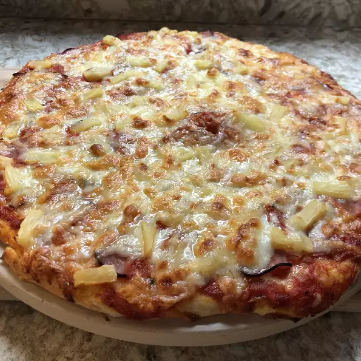

Pineapple Pizza

Crumbled bacon, pineapple chunks, bell pepper strips and prepared pizza sauce make a quick and tasty pizza.
Ingredients
- 1 (13.8 ounce) package refrigerated pizza crust dough
- 6 strips turkey bacon or lean deli ham slices
- 1 cup Contadina® Pizza Sauce or Pizza Squeeze
- 1 ½ cups shredded mozzarella cheese
- 1 (20 ounce) can Del Monte® Pineapple Chunks in 100% Juice, well drained
- ½ cup thinly sliced green or red bell pepper strips
- ¼ cup sliced green onion or diced red onion
- 2 tablespoons chopped cilantro (Optional)
Directions
- Preheat oven to 400 degrees F. Spray a large baking sheet with non-stick cooking spray. Press dough into a 15x10-inch rectangle, and decoratively pinch the edges, if desired. Bake 8 to 10 minutes or until edges begin to turn light golden brown.
- Meanwhile, cook bacon or deli ham until crisp in a non-stick skillet over medium-high heat; crumble and set aside.
- Spread pizza sauce evenly over crust. Sprinkle with cheese and remaining toppings. Bake 10 to 15 minutes or until cheese is melted and crust is golden brown.